Hybrid
Beyond the boundaries of Design
PROjects
why Zero?
좋은 디자인은 문제를 해결하는 것에서 시작한다고 믿습니다.
사용자의 경험을 고민하고 기획과 개발을 연결하며 더 나은 결과를 만드는 과정을 중요하게 생각합니다.
변화에 유연하게 적응하고 함께 고민하며 프로젝트를 완성하는 디자이너가 되고자 합니다.
ABOUT
- 이름 :김선영
- 전문 분야 :웹 디자인 및 퍼블리싱
- 업무 경험 :UI 디자인 및 퍼블리싱 / 편집, 모션 디자인 등
- 가치관 :더 나은 질문을 찾는 과정에서 더 나은 디자이너가 된다.
책임 신뢰
- FROM ZERO TO INFINITE
- FROM ZERO TO INFINITE
- FROM ZERO TO INFINITE
- FROM ZERO TO INFINITE
SKILL
제로에서 시작해 무한대까지, 스킬의 완성으로 펼쳐지는 경계 없는 상상력
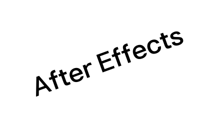
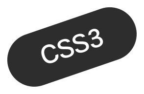
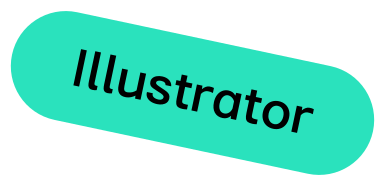
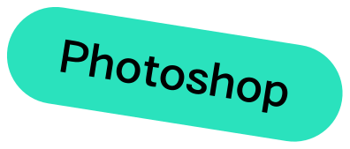
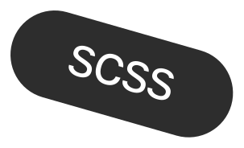
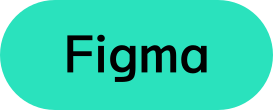
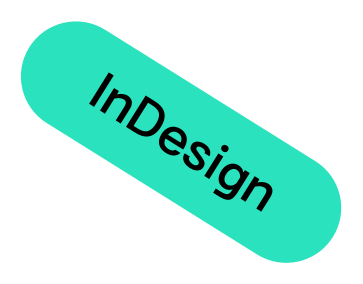
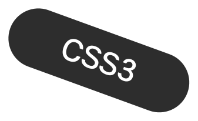
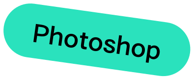
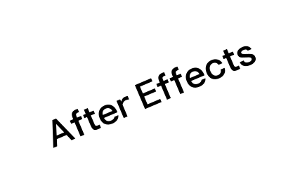
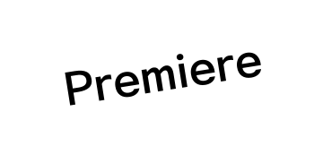
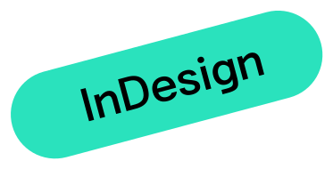
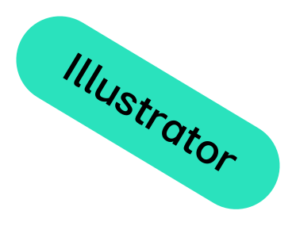
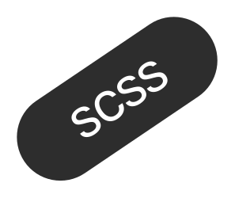
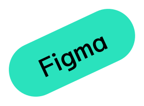
Contact
저와 함께 프로젝트를 진행하고 싶으신가요?